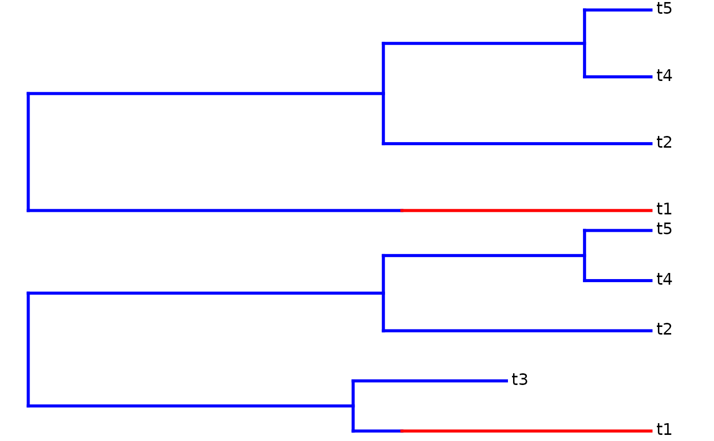

Function to simulate the macro-evolutionary succession process assuming diversity-dependent diversification
dd_MS_sim.RdSimulating a diversity-dependent diversification process where at a given time a new clade emerges with different inherent speciation rate and extinction rate
Arguments
- pars
Vector of parameters:
pars[1]corresponds to lambda_M (speciation rate of the main clade)pars[2]corresponds to mu_M (extinction rate of the main clade)pars[3]corresponds to K' (maximum number of species or a proxy for it in case of exponential decline in speciation rate)pars[4]corresponds to lambda_S (speciation rate of the novel subclade)pars[5]corresponds to mu_S (extinction rate)pars[6]tinn, the time the shift in rates occurs in the lineage leading to the subclade- age
Sets the crown age for the simulation
- ddmodel
Sets the model of diversity-dependence:
ddmodel == 1.3: linear dependence in speciation rate with parameter K' (= diversity where speciation = 0); ddmodel = 1 will be interpreted as this modelddmodel == 2.1: variant of exponential dependence in speciation rate with offset at infinity; ddmodel = 2 will be interpreted as this modelddmodel == 2.2: 1/n dependence in speciation rateddmodel == 2.3: exponential dependence in speciation rate with parameter x (= exponent)
Value
- out
A list with the following elements: The first element is the tree of extant species in phylo format
The second element is the tree of all species, including extinct species, in phylo format
The third element is a matrix of all species where
- the first column is the time at which a species is born
- the second column is the label of the parent of the species; positive and negative values only indicate whether the species belongs to the left or right crown lineage
- the third column is the label of the daughter species itself; positive and negative values only indicate whether the species belongs to the left or right crown lineage
- the fourth column is the time of extinction of the species
If the fourth element equals -1, then the species is still extant.
- the fifth column indicates whether the species belong to the main clade (0) or the subclade (1)
The fourth element is the subclade tree of extant species (without stem)
The fifth element is the subclade tree of all species (without stem)
The sixth element is the same as the first, except that it has attributed 0 for the main clade and 1 for the subclade
The seventh element is the same as the Second, except that it has attributed 0 for the main clade and 1 for the subclade
The sixth and seventh element will be NULL if the subclade does not exist (because it went extinct).
References
- Etienne, R.S. et al. 2012, Proc. Roy. Soc. B 279: 1300-1309,
doi: 10.1098/rspb.2011.1439
- Etienne, R.S. & B. Haegeman 2012. Am. Nat.
180: E75-E89, doi: 10.1086/667574
Examples
dd_MS_sim(c(0.2,0.1,20,0.1,0.05,4),10)

#> $tes
#>
#> Phylogenetic tree with 4 tips and 3 internal nodes.
#>
#> Tip labels:
#> t1, t2, t4, t5
#>
#> Rooted; includes branch lengths.
#>
#> $tas
#>
#> Phylogenetic tree with 5 tips and 4 internal nodes.
#>
#> Tip labels:
#> t1, t3, t2, t4, t5
#>
#> Rooted; includes branch lengths.
#>
#> $L
#> [,1] [,2] [,3] [,4] [,5]
#> [1,] 10.000000 0 -1 -1.000000 1
#> [2,] 10.000000 -1 2 -1.000000 0
#> [3,] 4.782674 -1 -3 2.321288 0
#> [4,] 4.297282 2 4 -1.000000 0
#> [5,] 1.066747 4 5 -1.000000 0
#>
#> $tesS
#> NULL
#>
#> $tasS
#> NULL
#>
#> $tes2
#>
#> Phylogenetic tree with 4 tips and 3 internal nodes.
#>
#> Tip labels:
#> [1] "t1" "t2" "t4" "t5"
#>
#> The tree includes a mapped, 2-state discrete character
#> with states:
#> 0, 1
#>
#> Rooted; includes branch lengths.
#>
#> $tas2
#>
#> Phylogenetic tree with 5 tips and 4 internal nodes.
#>
#> Tip labels:
#> [1] "t1" "t3" "t2" "t4" "t5"
#>
#> The tree includes a mapped, 2-state discrete character
#> with states:
#> 0, 1
#>
#> Rooted; includes branch lengths.
#>